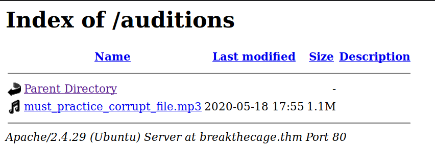
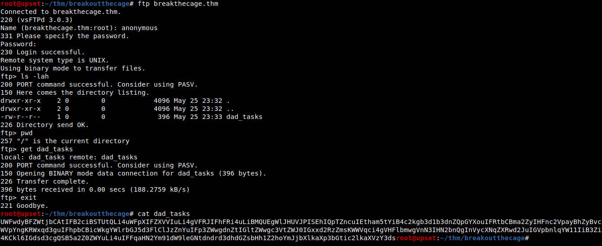
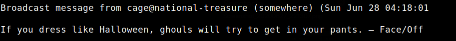
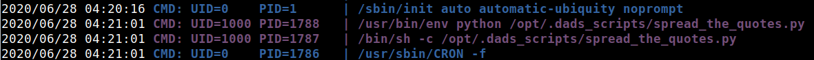
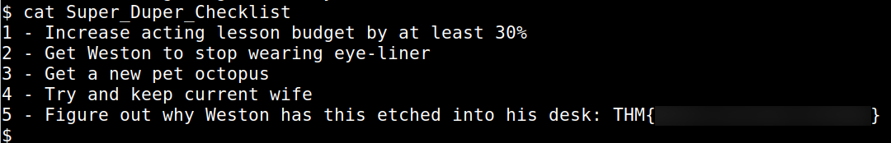
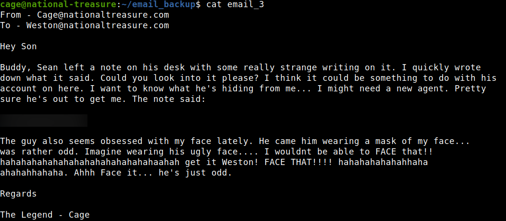

TryHackMe - Break Out The Cage

Contenido
| Titulo | Break Out The Cage |
|---|---|
| Room | Break Out The Cage |
| Info | Help Cage bring back his acting career and investigate the nefarious goings on of his agent! |
| Puntos | 240 |
| Dificultad | Facil |
| Maker | Magna |
NMAP
Escaneo de puertos tcp, nmap nos muestra el puerto ftp (21), http (80) y el puerto ssh (22) abiertos.
# Nmap 7.80 scan initiated Sat Jun 27 22:24:17 2020 as: nmap -sV -o nmap_scan_mini breakthecage.thm
Nmap scan report for breakthecage.thm (10.10.15.25)
Host is up (0.16s latency).
Not shown: 997 closed ports
PORT STATE SERVICE VERSION
21/tcp open ftp vsftpd 3.0.3
22/tcp open ssh OpenSSH 7.6p1 Ubuntu 4ubuntu0.3 (Ubuntu Linux; protocol 2.0)
80/tcp open http Apache httpd 2.4.29 ((Ubuntu))
Service Info: OSs: Unix, Linux; CPE: cpe:/o:linux:linux_kernel
Service detection performed. Please report any incorrect results at https://nmap.org/submit/ .
# Nmap done at Sat Jun 27 22:25:00 2020 -- 1 IP address (1 host up) scanned in 43.71 seconds
# Nmap 7.80 scan initiated Sat Jun 27 22:24:15 2020 as: nmap -T4 -sV -sC -p- -o nmap_scan breakthecage.thm
Nmap scan report for breakthecage.thm (10.10.15.25)
Host is up (0.15s latency).
Not shown: 65532 closed ports
PORT STATE SERVICE VERSION
21/tcp open ftp vsftpd 3.0.3
| ftp-anon: Anonymous FTP login allowed (FTP code 230)
|_-rw-r--r-- 1 0 0 396 May 25 23:33 dad_tasks
| ftp-syst:
| STAT:
| FTP server status:
| Connected to ::ffff:10.8.6.160
| Logged in as ftp
| TYPE: ASCII
| No session bandwidth limit
| Session timeout in seconds is 300
| Control connection is plain text
| Data connections will be plain text
| At session startup, client count was 3
| vsFTPd 3.0.3 - secure, fast, stable
|_End of status
22/tcp open ssh OpenSSH 7.6p1 Ubuntu 4ubuntu0.3 (Ubuntu Linux; protocol 2.0)
| ssh-hostkey:
| 2048 dd:fd:88:94:f8:c8:d1:1b:51:e3:7d:f8:1d:dd:82:3e (RSA)
| 256 3e:ba:38:63:2b:8d:1c:68:13:d5:05:ba:7a:ae:d9:3b (ECDSA)
|_ 256 c0:a6:a3:64:44:1e:cf:47:5f:85:f6:1f:78:4c:59:d8 (ED25519)
80/tcp open http Apache httpd 2.4.29 ((Ubuntu))
|_http-server-header: Apache/2.4.29 (Ubuntu)
|_http-title: Nicholas Cage Stories
Service Info: OSs: Unix, Linux; CPE: cpe:/o:linux:linux_kernel
Service detection performed. Please report any incorrect results at https://nmap.org/submit/ .
# Nmap done at Sat Jun 27 22:50:38 2020 -- 1 IP address (1 host up) scanned in 1582.44 seconds
HTTP
Encontramos una pagina web en el puerto 80.

GOBUSTER
Utilizamos gobuster para busqueda de directorios y archivos.
root@upset:~/thm/breakoutthecage# gobuster dir -u http://breakthecage.thm/ -w /usr/share/wordlists/dirbuster/directory-list-lowercase-2.3-small.txt -q -t 125 -x php,html,txt
/images (Status: 301)
/html (Status: 301)
/scripts (Status: 301)
/index.html (Status: 200)
/contracts (Status: 301)
/auditions (Status: 301)
Encontramos un directorio en donde hay un archivo mp3. 
Utilizamos Sonic Visualiser para verificar que el archivo no tenga algo dentro agregando una capa de espectrograma. Logramos ver una palabra que seguramente nos servira. Puede que alguna de las letras sea engañosa, audacity tambien trae la opcion de agregar una capa de espectrograma.

FTP - Task 1
Nos conectamos al servicio FTP con las credenciales de anonymous:anonymous y encontramos un archivo que esta codificado en base64. 
Utilizamos CyberChef para decodificar el mensaje, al realizar esto vemos el mensaje “descompuesto”. Utilizamos Vigenere Cipher con la palabra que encontramos para obtener el mensaje real. Task 1

USER - WESTON -> CAGE
Ahora que encontramos la contraseña de weston iniciamos sesion en el servicio ssh. Hacemos una pequeña enumeracion con sudo -l -l y vemos que tenemos permisos root (sudo) para ejecutar el comando /usr/bin/bees. El archivo contiene un comando, pero este no puede ser editado por el usuario actual.

Utilizamos pspy64 para ver si existe algun cronjob en la maquina, esto porque durante la enumeracion de los archivos se imprimia un mensaje diferente en pantalla.

Encontramos un archivo que se ejecuta y se encuentra en el directorio /opt/.

El codigo del script en python lee el archivo .quotes en el que hay una larga lista de frases, elige una aleatoria, la imprime mediante el comando wall.

Para poder tomar ventaja de este script deberia de quedar de la siguiente forma para poder ejecutar comandos y una posible shell inversa.

Renombramos el archivo .quotes, creamos uno nuevo con una frase y nuestra shell inversa.

Ponemos a la escucha netcat en nuestra maquina, esperamos, y logramos obtener una shell con el usuario cage.

Y nuestra flag user.txt. 
PRIVILEGE ESCALATION
En la carpeta principal de cage encontramos el archivo id_rsa que nos da acceso a una shell en el servicio ssh. En la carpeta email_backup encontramos varios correos en tres archivos. En uno de ellos hablan sobre una nota y lo que esta decia.

Intentamos utilizarla como contraseña del usuario root pero no funcionó, por lo que utilizamos nuevamente vignere cipher pero esta vez no teniamos la clave y utilizamos dcode.fr ya que nos muestra una lista de posibles claves y su resultado. Logramos encontrar su clave y el mensaje real.

Utilizamos el mensaje real como contraseña del usuario root y logramos obtener acceso con este usuario, además encontramos nuevamente un backup de correos en su carpeta principal y en uno de ellos nuestra flag *root.txt.